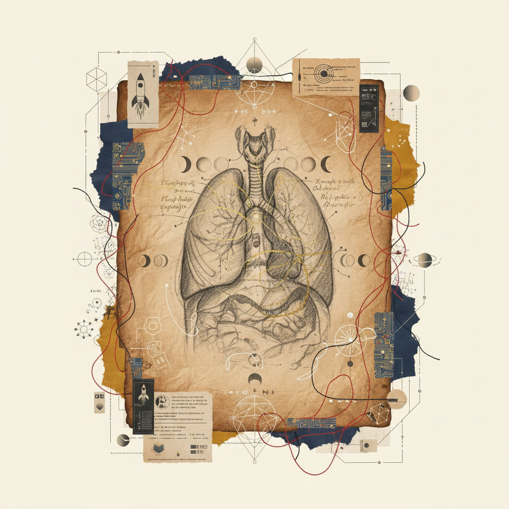
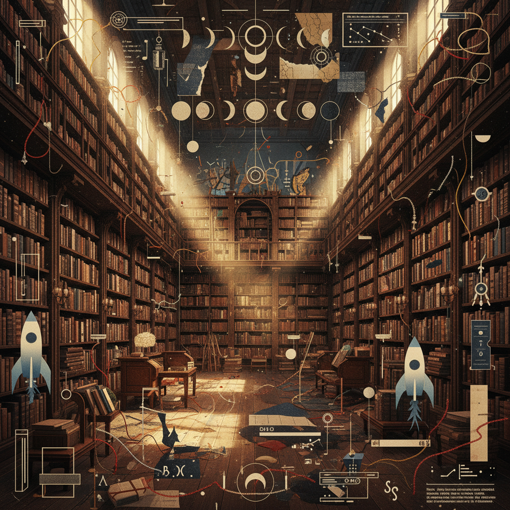
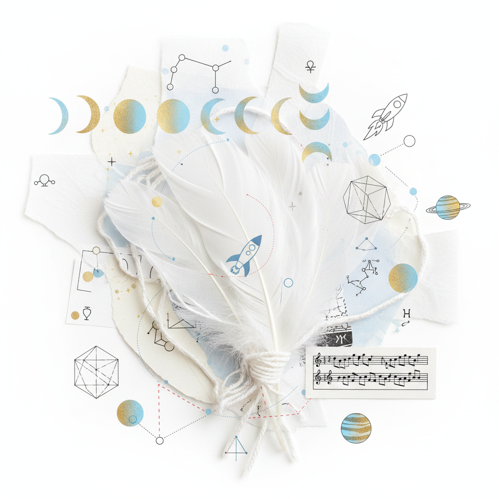

WORKBOOK 10 // SEQUENCE
Sagittarius Full Moon → Gemini New Moon
Vision to Voice
A protocol for the crystallization of expansive intuition into precise linguistic expression.

Physiological Focus
Hips/Thighs → Lungs
The Somatic Shift
The fire of Sagittarius resides in the powerful muscles of the thighs—the engine of the archer. To transition into Gemini, we must pull that momentum upward, through the solar plexus, and into the bellows of the lungs.
"Movement is the precursor to thought. The gait determines the rhythm of the sentence."
Vocal Attunements
Where does your voice originate during moments of unbridled inspiration?
Transcribe a complex vision into a single, three-word declarative sentence.
Ritual Audio Guide
Listen to the harmonic transition between the Sagittarian 'G' and the Geminian 'S'—a bridge from throat to teeth.
On the Translation of Wisdom into Vernacular Speech
The inherent risk of the visionary path is the 'Hermetic Seal'—knowledge so profound it becomes untranslatable. Research the Etymology of Logos and propose a method by which high-frequency intuition can survive the low-fidelity medium of human language without losing its sacred core.
Submission Date
Gemini New Moon
Academic Weight
12 Credits

Reference Material
The Chaperone Archives: Sector 09
Air Element
The distribution of seeds via the breath.
